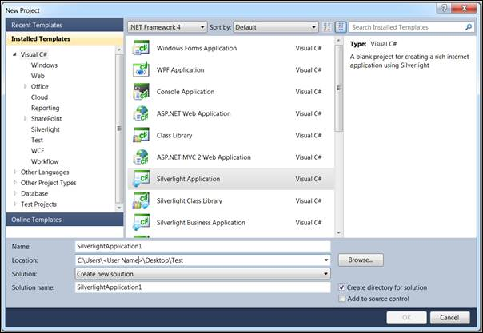
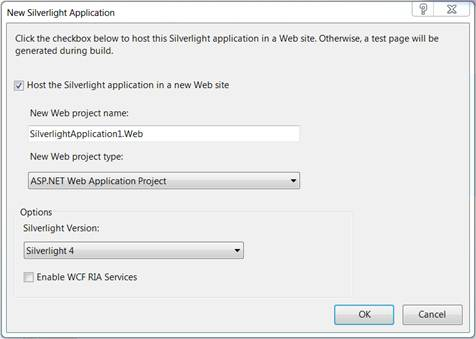
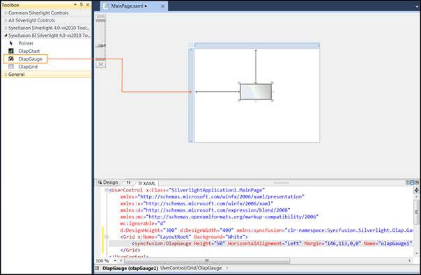
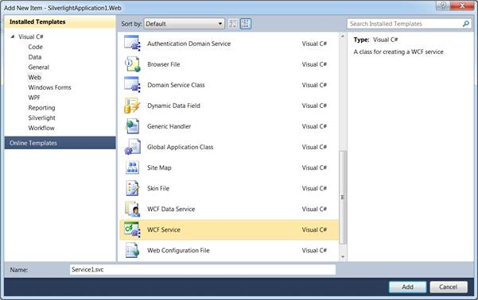

To create an OLAP gauge for Silverlight:
1. Click Start àAll Programsà Microsoft Visual Studio 2010.
2. Now go to File à New à Project. The New Project dialog box appears as follows.

Figure 6: “New Project” dialog box
3. Select Silverlight Application and then click OK.
4. Host the Silverlight application in a new Web site.

Figure 7: Hosting Silverlight Application in a new Web site
5. Click OK, to create a web project as well as a Silverlight project.
6. The OLAP Gauge control is now available under the Syncfusion BI Silverlight 4.0 – vs2010 Toolbox <Essential studio version number> tab inside the toolbox panel. Drag and drop the OLAP Gauge control onto the design or XAML region.

Figure 8: OLAP Gauge in designer
7. Add the following assemblies as reference to the web project:
· Syncfusion.Olap.Base
· Syncfusion.OlapSilverlight.BaseWrapper
8. Add a WCF Service to the web project by right clicking Project and navigating to Add New Item -> WCF Service. Then, name the Service as OlapManager and delete the IOlapManager.cs file as the service needs to be inherited with IOlapDataProvider.

Figure 9: WCF Service
9. Inherit the newly added WCF service with IOlapDataProvider and implement it explicitly. The connection to the database is done with the help of WCF service. The service has to be created and instantiated as described below:
|
[C#]
public class OlapManager : IOlapDataProvider { Syncfusion.OlapSilverlight.Manager.OlapDataProvider dataManager;
/// <summary> /// Initializes a new instance of the <see cref="OlapManager"/> class. /// </summary> public OlapManager() { string connectionString = "DataSource=localhost;Initial Catalog=Adventure Works DW"; // Instantiating the OlapDataProvider with Connection String dataManager = new OlapDataProvider(connectionString); }
#region IOlapDataProvider Members
/// <summary> /// Executing the CellSet by passing OlapReport /// </summary> /// <param name="report">The report.</param> /// <returns></returns> public Syncfusion.OlapSilverlight.Data.CellSet ExecuteOlapReport(Syncfusion.OlapSilverlight.Reports.OlapReport report) { Syncfusion.OlapSilverlight.Data.CellSet cellSet = this.dataManager.ExecuteOlapReport(report); // Closing the Provider Connection this.dataManager.DataProvider.CloseConnection(); return cellSet; }
/// <summary> /// Executing the CellSet by passing MDX Query /// </summary> /// <param name="mdxQuery">The MDX query.</param> /// <returns></returns> public Syncfusion.OlapSilverlight.Data.CellSet ExecuteMdxQuery(string mdxQuery) { Syncfusion.OlapSilverlight.Data.CellSet cellSet = this.dataManager.ExecuteMdxQuery(mdxQuery); // Closing the Provider Connection this.dataManager.DataProvider.CloseConnection(); return cellSet; }
public MemberCollection GetChildMembers(string memberUniqueName, string cubeName) { throw new NotImplementedException(); }
public CubeSchema GetCubeSchema(string cubeName) { throw new NotImplementedException(); }
public CubeInfoCollection GetCubes() { throw new NotImplementedException(); }
public MemberCollection GetLevelMembers(string levelUniqueName, string cubeName) { throw new NotImplementedException(); }
#endregion }
|
|
[VB]
Public Class OlapManager Implements IOlapDataProvider Private dataManager As Syncfusion.OlapSilverlight.Manager.OlapDataProvider
''' <summary> ''' Initializes a new instance of the <see cref="OlapManager"/> class. ''' </summary> Public Sub New() Dim connectionString As String = "DataSource=localhost;Initial Catalog=Adventure Works DW" ' Instantiating the OlapDataProvider with Connection String dataManager = New OlapDataProvider(connectionString) End Sub
#Region "IOlapDataProvider Members"
''' <summary> ''' Executing the CellSet by passing OlapReport ''' </summary> ''' <param name="report">The report.</param> ''' <returns></returns> Public Function ExecuteOlapReport(ByVal report As Syncfusion.OlapSilverlight.Reports.OlapReport) As Syncfusion.OlapSilverlight.Data.CellSet Dim cellSet As Syncfusion.OlapSilverlight.Data.CellSet = Me.dataManager.ExecuteOlapReport(report) ' Closing the Provider Connection Me.dataManager.DataProvider.CloseConnection() Return cellSet End Function
''' <summary> ''' Executing the CellSet by passing MDX Query ''' </summary> ''' <param name="mdxQuery">The MDX query.</param> ''' <returns></returns> Public Function ExecuteMdxQuery(ByVal mdxQuery As String) As Syncfusion.OlapSilverlight.Data.CellSet Dim cellSet As Syncfusion.OlapSilverlight.Data.CellSet = Me.dataManager.ExecuteMdxQuery(mdxQuery) ' Closing the Provider Connection Me.dataManager.DataProvider.CloseConnection() Return cellSet End Function
Public Function GetChildMembers(ByVal memberUniqueName As String, ByVal cubeName As String) As MemberCollection Throw New NotImplementedException() End Function
Public Function GetCubeSchema(ByVal cubeName As String) As CubeSchema Throw New NotImplementedException() End Function
Public Function GetCubes() As CubeInfoCollection Throw New NotImplementedException() End Function
Public Function GetLevelMembers(ByVal levelUniqueName As String, ByVal cubeName As String) As MemberCollection Throw New NotImplementedException() End Function
#End Region End Class
|
10. Include the Custom Binding and the Service endpoint address in the Web.Config file under the ServiceModel section.
|
<!--Binding--> <!—Endpoint
Address-->
contract="Syncfusion.OlapSilverlight.Manager.IOlapDataProvider"> |
11. Add the System.ServiceModel assembly as reference for the Silverlight project.
12. Add the following Namespaces in MainPage.xaml.cs:
· System.ServiceModel
· System.ServiceModel.Channels
· Syncfusion.OlapSilverlight.Reports
· Syncfusion.Silverlight.Grid
· Syncfusion.OlapSilverlight.Manager
· Syncfusion.OlapSilverlight.Engine
13. Service instantiation in Silverlight project (MainPage.xaml.cs)
a. Declare IOlapDataProvider for Service instantiation.
|
[C#]
// Declaring the IOlapDataProvider for service instantiation |
|
[VB]
' Declaring the IOlapDataProvider for service instantiation Dim DataProvider As IOlapDataProvider = Nothing |
b. Specifying the custom binding and instantiating the DataProvider from the ChannelFactory.
|
[C#]
private void InitializeConnection() |
|
[VB]
Private Sub InitializeConnection() Dim customBinding As System.ServiceModel.Channels.Binding = New CustomBinding(New BinaryMessageEncodingBindingElement(), New HttpTransportBindingElement With {.MaxReceivedMessageSize = 2147483647}) Dim address As EndpointAddress = New EndpointAddress(New Uri(App.Current.Host.Source & "../../../../OlapManager.svc/binary")) Dim clientChannel As ChannelFactory(Of IOlapDataProvider) = New ChannelFactory(Of IOlapDataProvider)(customBinding, address) DataProvider = clientChannel.CreateChannel() End Sub |
14. Next, in the MainPage_LoadEvent, a report is created by the user as per requirements, which comprises dimension, measure and named set elements along the categorical, series and slicer axes and added to the OlapDataManager through the SetCurrentReport(OlapReport) method or by CurrentReport property. Now, the OlapDataManager is assigned to gauge controls OlapDataManager and the DataBind() method is called to render the OLAP gauge with the current report information.
The report can be defined in code, as follows:
|
[C#]
private void MainPage_Loaded(object sender, RoutedEventArgs e) private OlapReport CreateReport() { OlapReport report = new OlapReport(); report.CurrentCubeName = "Adventure Works";
//Specifying the KPI name KpiElements kpiElement = new KpiElements(); kpiElement.Elements.Add(new KpiElement { Name = "Internet Revenue", ShowKPIGoal = true, ShowKPIStatus = true, ShowKPIValue = true, ShowKPITrend = true });
DimensionElement dimensionElementColumn = new DimensionElement(); //Specifying the dimension name dimensionElementColumn.Name = "Customer"; //Adding the level with the hierarchy Name dimensionElementColumn.AddLevel("Customer Geography", "Country");
//Specifying the measure name MeasureElements measureElementColumn = new MeasureElements(); measureElementColumn.Elements.Add(new MeasureElement { Name = "Internet Sales Amount" });
DimensionElement dimensionElementRow = new DimensionElement(); //Specifying the dimension name dimensionElementRow.Name = "Date"; //Adding the level with the hierarchy Name dimensionElementRow.AddLevel("Fiscal", "Fiscal Year");
report.CategoricalElements.Add(dimensionElementColumn); report.CategoricalElements.Add(kpiElement); report.CategoricalElements.Add(measureElementColumn); report.SeriesElements.Add(dimensionElementRow); return report; } |
|
[VB]
Private Sub MainPage_Loaded(ByVal sender As Object, ByVal e As RoutedEventArgs) ' Initialize the service connection Me.InitializeConnection() ' Instantiating the OlapDataManager Dim m_OlapDataManager As OlapDataManager = New OlapDataManager() ' Specifying the DataProvider for OlapDataManager m_OlapDataManager.DataProvider = Me.DataProvider ' Set Current report for OlapDataManager m_OlapDataManager.SetCurrentReport(CreateReport()) ' Specifying the OlapDataManager for OlapGauge Me.olapGauge1.OlapDataManager = m_OlapDataManager ' Data Binding Me.olapGauge1.DataBind() End Sub
Private Function CreateReport() As OlapReport
Dim report As OlapReport = New OlapReport() report.CurrentCubeName = "Adventure Works"
'Specifying the KPI name Dim kpiElement As KpiElements = New KpiElements() kpiElement.Elements.Add(New KpiElement With {.Name = "Internet Revenue", .ShowKPIGoal = True, .ShowKPIStatus = True, .ShowKPIValue = True, .ShowKPITrend = True})
Dim dimensionElementColumn As DimensionElement = New DimensionElement() 'Specifying the dimension name dimensionElementColumn.Name = "Customer" 'Adding the level with the hierarchy Name dimensionElementColumn.AddLevel("Customer Geography", "Country")
'Specifying the measure name Dim measureElementColumn As MeasureElements = New MeasureElements() measureElementColumn.Elements.Add(New MeasureElement With {.Name = "Internet Sales Amount"})
Dim dimensionElementRow As DimensionElement = New DimensionElement() 'Specifying the dimension name dimensionElementRow.Name = "Date" 'Adding the level with the hierarchy Name dimensionElementRow.AddLevel("Fiscal", "Fiscal Year")
report.CategoricalElements.Add(dimensionElementColumn) report.CategoricalElements.Add(kpiElement) report.CategoricalElements.Add(measureElementColumn) report.SeriesElements.Add(dimensionElementRow) Return report
End Function |
15. Run the application. The following output is generated.

Figure 10: OLAP Gauge